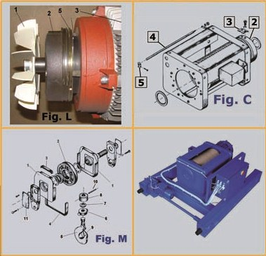

Using this application you can easily browse and select spare parts from MISIA ITALY for your MISIA hoist.
Before using it you must know the following "how-to-use" tips:
Navigate on our catalog using controls from "Navigation" section click on the picture or figure number of your needed part. You can do this for as many parts you want, but don't forget about Cart that can be accessed from top of the page.
All parts should be followed by hoist serial, you can insert that after you select a part or into the Cart section.
Log in, Register or Quick Register will appear you automatically after proceeding from Cart section.
After you sent the inquiry our representatives will contact you to manage your request. Isn't it easy?